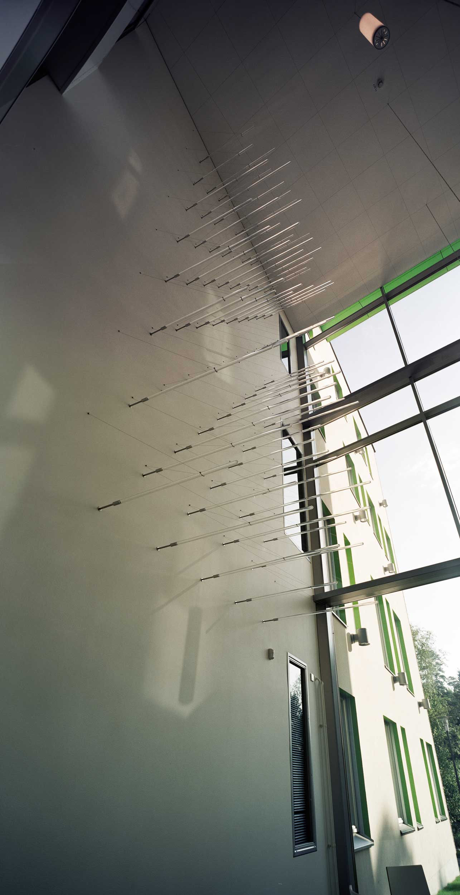
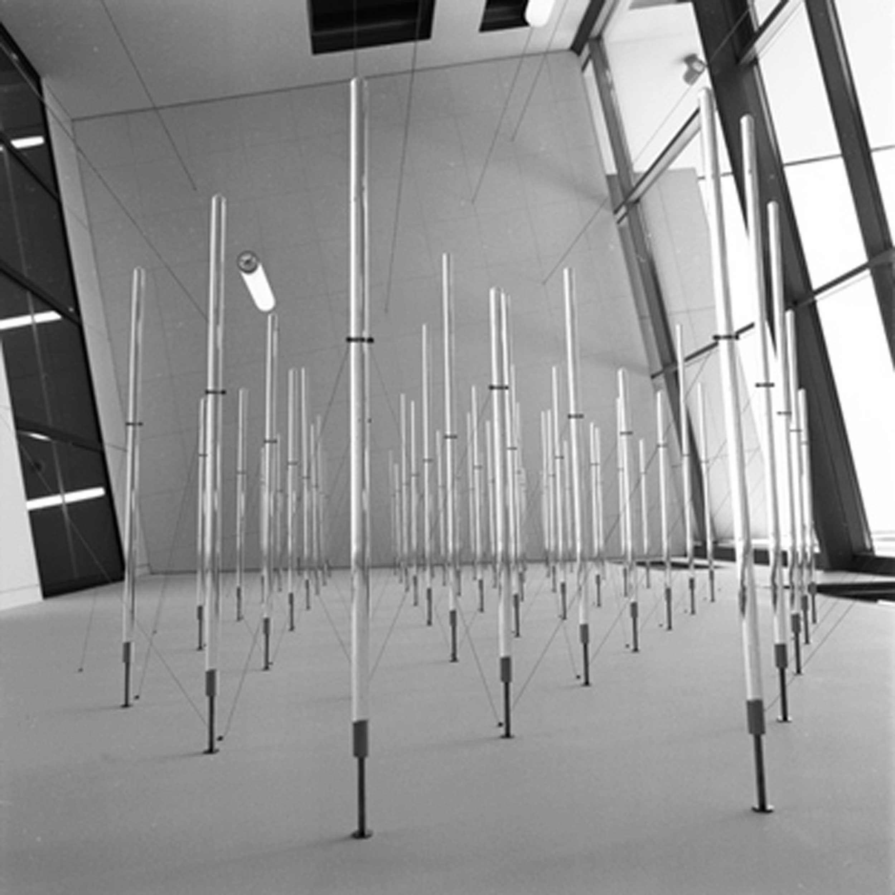
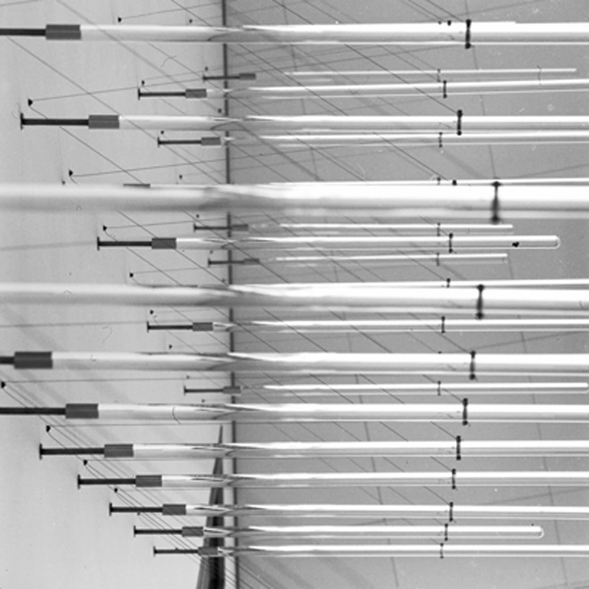

Light Oreography
Tampere University of Technology
2014
Machined acrylic rods, stainless-steel retainers, stainless-steel wire
Acrylic rods of three different lengths were arranged to form a triangular grid on the concrete wall of a
three-storey lobby space next to a glass wall that looks out onto a courtyard. The acrylic rods were held in
place by fine stainless-steel wires, creating an apparently fragile latticework structure on top of the
concrete wall. The tips of the acrylic rods of varying lengths trace out an imaginary surface or “landscape”
in front of the wall. The natural light pouring in through the glass wall emphasizes the transparency of the
work, and throws shadows on the concrete wall. The lighting conditions change with the weather, time of day,
and time of year, constantly altering the appearance of the work.


